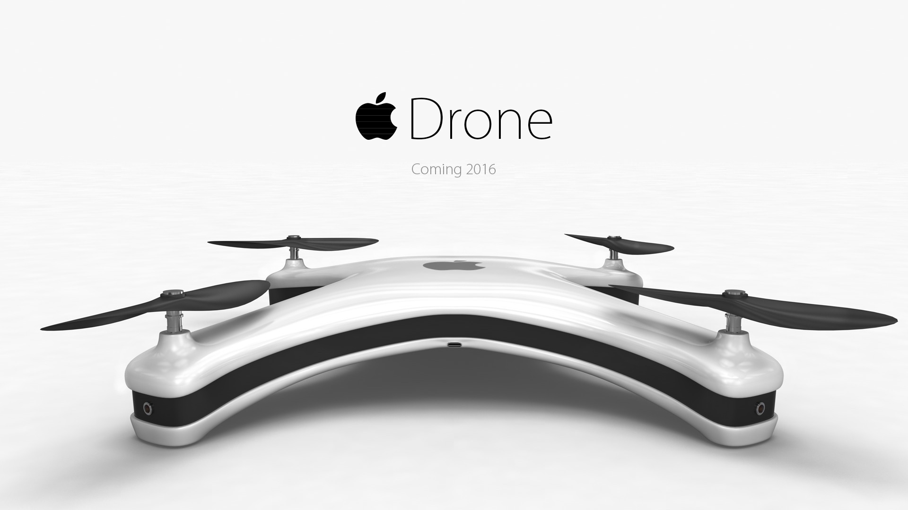
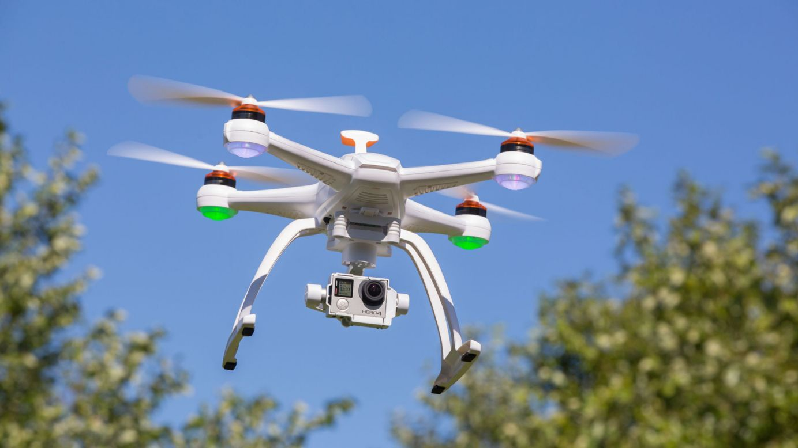

A two-axis gimbal is built onto this drone to help keep your video footage smooth. You need to purchase and install your own camera since one is not included. The Walkera QR X350 Pro GPS drone is fast and has longer battery life than most drones. Unfortunately, it doesn't come with a camera, so if you want to shoot aerial video or photos, you'll have to purchase a camera separately.
he Syma X5C is the next drone on the list and I know that it will blow your mind! It has many advanced features that will impress seasoned pilots but at the same time, it is well suited for newbies too. The first feature that I’m going to discuss is its HD camera. It is able to record videos at 1280×720 pixels at 30 frames per second and its pictures and videos are remarkably clear considering the price. So if you want a drone that can take epic shots but is also affordable, then the Syma X5C may be the perfect fit for you!
The Blade Nano QX RTF is a simple, easy-to-fly quadcopter that is a lot of fun. Designed to be flown indoors, this drone is stable enough for beginners but nimble enough for stunt flying. Thanks to its tough construction and neat design, the Nano QX isn't likely to break things or itself when it crashes. The Nano QX is a great pick for the first-time drone flier who wants to get a feel for the complex process of flying a quadcopter.One very nice touch is the inclusion of prop guards — small pieces of plastic that extend from the frame beyond the four rotating propellers. If you fly sideways into something (as you inevitably will), these guards stop the fast-rotating propeller blades from hitting it, protecting both them and whatever you hit.
It is one of the many standard iOS controlled tools that have continually evolved. This mini-drone can be customized by attaching mini blocks and figures. Once released in the air, the engine comes to life instantly. Using the inbuilt VGA cameras and the I GB flash memory, it is easy to take aerial photos while in flight. For safety purposes while on the flight, it has a circuit breaker in the propeller that reduces potential damage in case it comes into contact with another object. The Free Flight 3 app that runs it can be downloaded from a smartphone or tablet. It uses Bluetooth connectivity.